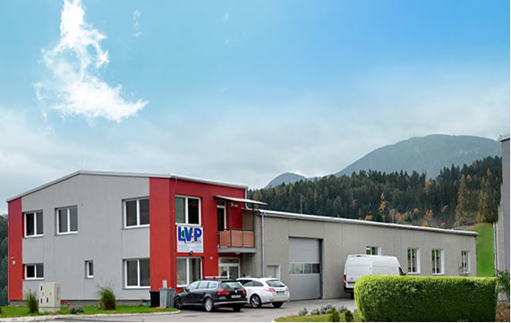
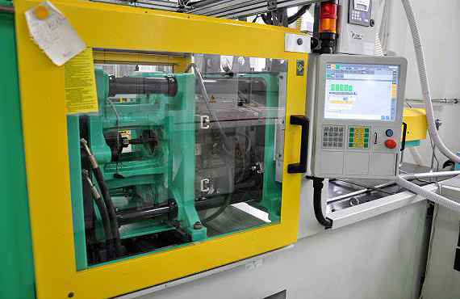
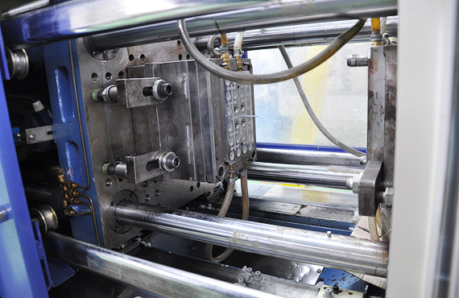
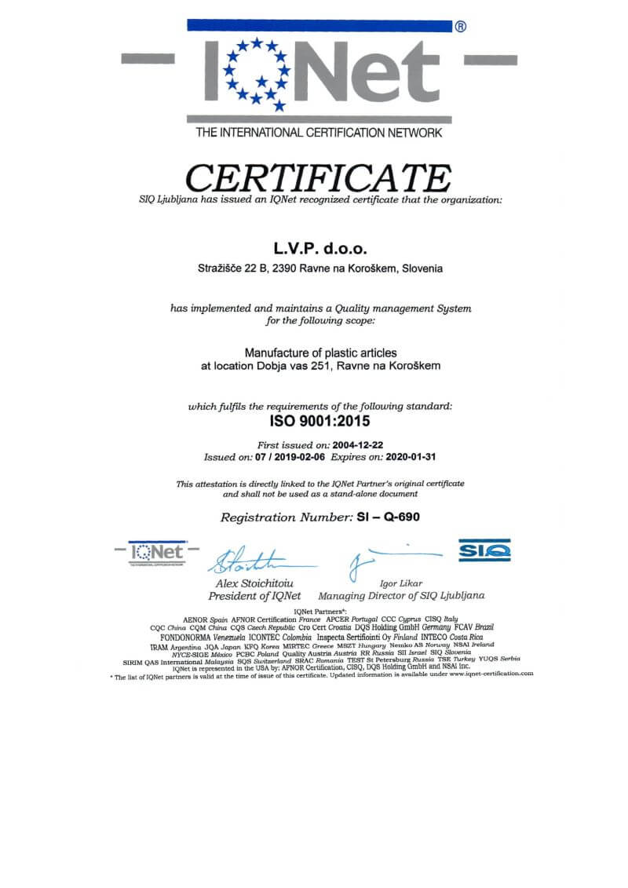
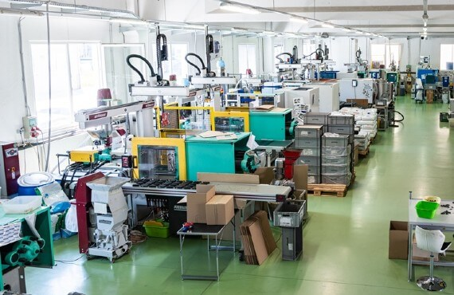

18 predanih zaposlenih v dveh izmenah, ki stremijo k natančnosti, zanesljivosti in dolgoročnemu sodelovanju.

Osnovna dejavnost podjetja je proizvodnja plastičnih izdelkov in polizdelkov iz različnih materialov, s poudarkom na termoplastih in termoplastičnih elastomerih.
Med najpomembnejšimi partnerji so Hisense Gorenje, BSH Hišni aparati, Tovarna meril in Mora Moravia.

Podjetje začne delovati na naslovu Stražišče 22/B v Ravnah na Koroškem, kjer ostane 16 let.

Zaradi znatnega povečanja proizvodnje selitev v nove prostore na Stare sledi 15.

Certifikat potrdi zavezanost kakovostnemu upravljanju in stalnim izboljšavam.
Proizvodnja in uprava v namensko zgrajenem objektu s 600 m² v coni Dobja vas.

Brizganje, digitalni tisk, tampotisk in 3D-tisk pod eno streho.
Z glavne ceste zavijete desno v poslovno cono Dobja vas, krožišče zapustite na drugem izvozu, v naslednjem krožišču zavijete desno. Vhod je tik ob stavbi podjetja Toneko.
Koordinate: 46.5465307, 14.9420414 · Odpri v Google Zemljevidih ↗